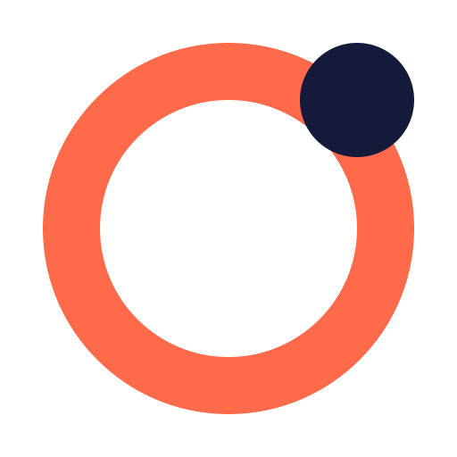

Órbita SocialCondiciones del servicio
Última actualización: 16 de octubre de 2026
Objeto
Órbita Social es una herramienta interna que Carlos da Conceiçao utiliza para gestionar las redes sociales de sus clientes. Su uso está limitado a las cuentas que los clientes autorizan expresamente.
Autorización de cuentas
Al conectar una cuenta, su titular autoriza el acceso a los datos y acciones indicados en la pantalla de permisos de cada plataforma. El titular puede retirar la autorización en cualquier momento desde la propia plataforma.
Uso de las plataformas
El uso de Órbita Social respeta las condiciones de uso y las políticas de desarrolladores de Meta, Google/YouTube, TikTok y LinkedIn. Cada publicación se realiza en nombre y con el consentimiento del cliente.
Responsabilidad
El servicio se presta tal cual, como herramienta de apoyo a la gestión. Las estadísticas proceden de las API de cada plataforma y pueden contener retrasos o diferencias respecto a las aplicaciones nativas.